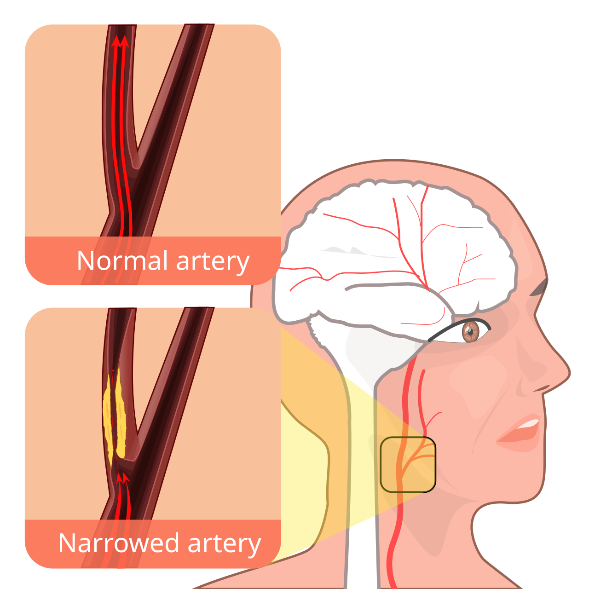

💪 Sức khỏe Nam giới
Sexual Health — Erectile Dysfunction & Vascular SignalsDeep dive⏱ 8 phút đọc
Rối Loạn Cương Dương (ED): Tín Hiệu Báo Động Sớm Của Hệ Tuần Hoàn & Sức Khỏe Chuyển Hóa
Rối loạn cương dương (ED) thường bị che phủ bởi cảm giác xấu hổ và mặc cảm, nhưng trong mắt các bác sĩ tim mạch, nó chính là chiếc 'phanh khẩn cấp' của hệ tuần hoàn. Dữ liệu từ Hiệp hội Tim mạch Hoa Kỳ (AHA) chứng minh: Rối loạn cương ở nam giới từ 30–50 tuổi xuất hiện trước các cơn nhồi máu cơ tim hoặc đột quỵ từ 2 đến 5 năm, biến nó thành cơ hội vàng để can thiệp bảo vệ tính mạng.
Đừng xem rối loạn cương chỉ là chuyện phòng the; hãy xem nó là bài kiểm tra sức khỏe động mạch. Động mạch hang nhỏ hơn nhiều so với động mạch vành tim. Khám tim mạch, xét nghiệm mỡ máu, kiểm tra đường huyết và phục hồi độ đàn hồi nội mô là bước đi sống còn hàng đầu.
Giả Thuyết Kích Thước Động Mạch (The Artery Size Hypothesis)
Tại sao một tổn thương mạch máu toàn thân lại luôn biểu hiện ở "cậu nhỏ" trước tiên chứ không phải ở tim hay não? Câu trả lời nằm ở nguyên lý hình học giải phẫu của mạch máu (Montorsi et al., European Urology):
- Động mạch hang dương vật (Penile cavernosal artery): Có đường kính chỉ 1 đến 2 mm.
- Động mạch vành nuôi tim (Coronary artery): Có đường kính 3 đến 4 mm.
- Động mạch cảnh nuôi não (Carotid artery): Có đường kính 5 đến 7 mm.
- Động mạch đùi (Femoral artery): Có đường kính 6 đến 8 mm.
Khi cơ thể bắt đầu xuất hiện tình trạng viêm nội mô mạn tính, đề kháng insulin hoặc tích tụ mảng xơ vữa mỡ máu: một mảng bám mỏng làm hẹp 0.5 mm lòng mạch sẽ lập tức bóp nghẹt hơn 50% tiết diện của động mạch hang 1mm, làm suy sụp áp lực thủy lực cần thiết để cương cứng. Trong khi đó, cùng một mảng bám ấy trên động mạch vành 4mm chỉ làm giảm một phần nhỏ lưu lượng máu, chưa hề gây đau thắt ngực.
Vì vậy, Rối loạn cương do căn nguyên mạch máu chính là dấu hiệu cảnh báo bệnh mạch vành đi trước thời gian từ 24 đến 60 tháng!

📊 Quá trình hẹp lòng động mạch do mảng vữa xơ: Do động mạch hang có đường kính chỉ 1–2 mm, rối loạn cương dương thường là dấu hiệu cảnh báo sớm trước biến cố mạch vành 3–5 năm.(Link sơ đồ y khoa gốc ↗)
3 Nhóm Căn Nguyên Gây Rối Loạn Cương: Phân Biệt Để Điều Trị Đúng
Nhóm Căn Nguyên
Dấu Hiệu Phân Biệt Điển Hình
Tình Trạng Cương Buổi Sáng (NPT)
Hướng Can Thiệp Ưu Tiên
Căn nguyên Mạch máu & Chuyển hóa (Vascular/Metabolic)
Khởi phát từ từ qua nhiều tháng; cương không đủ cứng hoặc dễ xìu khi đổi tư thế; đi kèm huyết áp cao, mỡ máu.
Hoàn toàn biến mất hoặc rất yếu ớt cả khi thức dậy.
Kiểm soát đường huyết, giảm mỡ nội tạng, tập cardio Zone 2, bổ sung Nitrat/Omega-3.
Căn nguyên Tâm lý & Lo âu (Psychogenic)
Xuất hiện đột ngột sau một sự cố tâm lý hoặc đổi bạn tình; hoàn cảnh quan hệ thì xìu nhưng thủ dâm vẫn cương tốt.
Vẫn xuất hiện bình thường và cương rất cứng vào buổi sáng.
Liệu pháp giải tỏa lo âu hiệu suất (Sensate Focus), điều hòa thần kinh tự chủ, giảm stress.
Căn nguyên Thần kinh & Nội tiết (Neurogenic/Endocrine)
Testosterone tự do giảm sâu; mất hoàn toàn ham muốn tình dục; có tiền sử chấn thương cột sống hoặc biến chứng tiểu đường.
Giảm tần suất theo mức độ suy giảm nội tiết tố.
Khám chuyên khoa Nam học - Nội tiết; đo nồng độ Prolactin, LH, Free T; điều trị nguyên nhân gốc.
Các Chỉ Số Sức Khỏe Trên Thiết Bị Đeo Cảnh Báo Sớm Nguy Cơ Mạch Máu
Những chiếc đồng hồ thông minh (Apple Watch, Garmin, WHOOP) không đo trực tiếp chức năng cương, nhưng chúng liên tục theo dõi hệ tim mạch của bạn:
1. Nhịp Tim Nghỉ Ngơi (RHR) Tăng Cao Liên Tục: Nếu RHR ban đêm tăng dần từ 50 lên 65–70 bpm qua các tháng mà không do thay đổi vận động, đây là dấu hiệu buồng tim đang phải làm việc vất vả hơn do thành mạch bị xơ cứng và mất tính đàn hồi.
2. Điểm Thể Lực Tim Mạch (Cardio Fitness / VO2 Max) Thấp: Nghiên cứu từ Feldman et al. (MMAS Study) cho thấy nam giới có VO2 Max nằm trong nhóm 20% thấp nhất có nguy cơ mắc ED cao gấp 3 lần so với nhóm có VO2 Max tối ưu.
3. Dao Động Huyết Áp Ban Đêm (Non-Dipping BP): Bình thường huyết áp phải hạ 10%–20% khi ngủ. Mất hiện tượng hạ áp đêm phản ánh tổn thương nội mô nghiêm trọng.
Phác Đồ 4 Bước Phục Hồi Độ Đàn Hồi Vi Mạch Cho Phái Mạnh
Khám Sức Khỏe Toàn Diện (Full Cardiovascular Workup): Xét nghiệm bộ mỡ máu (Lipid Panel: Triglyceride, ApoB, LDL-C), đường huyết lúc đói (Fasting Glucose, HbA1c) và đo điện tâm đồ gắng sức.
Kê Đơn Tập Luyện Cardio Zone 2 Đều Đặn: Thực hiện 150–180 phút tập luyện Zone 2 mỗi tuần (chạy bộ nhẹ, đạp xe ở mức vẫn có thể nói chuyện ngắt quãng). Tập Zone 2 kích thích sản sinh vi mạch máu mới (Angiogenesis) và kích hoạt enzyme eNOS tạo Nitric Oxide khắp cơ thể.
Cai Thuốc Lá & Vaping Tuyệt Đối: Nicotine và khói thuốc là chất gây co thắt mạch máu tức thì và phá hủy màng tế bào nội mô. Ngừng hút thuốc giúp lưu lượng máu động mạch hang phục hồi rõ rệt sau 6–8 tuần.
Tập Luyện Sàn Chậu Phục Hồi Cơ Hành Hang: Luyện tập các bài Kegel chuẩn y khoa giúp tăng cường sức mạnh cơ Ischiocavernosus và Bulbospongiosus—hai cơ bọc quanh gốc dương vật có nhiệm vụ ép chặt tĩnh mạch để duy trì độ cứng vững bền vững.
Tài Liệu Tham Khảo & Nguồn Y Khoa
Montorsi, P., Ravagnani, P. M., et al. (2006).Association between erectile dysfunction and coronary artery disease. European Urology, 49(5), 884–891. Tạp chí European Urology (PMID: 16530932) ↗
Feldman, H. A., Goldstein, I., Hatzichristou, D. G., et al. (1994).Impotence and its medical and psychosocial correlates: results of the Massachusetts Male Aging Study. The Journal of Urology, 151(1), 54–61. Báo Cáo Nghiên Cứu Gốc (NCBI PubMed: 8254833) ↗
Grover, S. A., Lowensteyn, I., et al. (2006).The prevalence of erectile dysfunction in the primary care setting: importance of evaluating for cardiovascular disease. Archives of Internal Medicine. Tạp chí JAMA Network (PMID: 16401824) ↗
Jackson, G., Boon, N., Eardley, I., et al. (2010).Erectile dysfunction and coronary artery disease prediction: evidence-based guidance and consensus. International Journal of Clinical Practice. Báo Cáo Nghiên Cứu Gốc (NCBI PubMed: 20584226) ↗
📚
Nguồn Tham Khảo Y Khoa & Nghiên Cứu Gốc
Bài viết này được tổng hợp và kiểm chứng từ các nghiên cứu y sinh học, hướng dẫn lâm sàng và tài liệu khoa học thiết bị đeo của European Urology & American Heart Association (Circulation).
💪 Men's Health
Sexual Health — Erectile Dysfunction & Vascular SignalsDeep dive⏱ 8 min read
Erectile Dysfunction Decoded: The Early Cardiovascular & Metabolic Warning System
Erectile dysfunction is often shrouded in stigma, yet cardiologists view it as the body's most sensitive cardiovascular early warning signal. Epidemiological data published in Circulation confirms that ED in men aged 30–50 precedes major adverse cardiovascular events (myocardial infarction, stroke) by 2 to 5 years, providing an invaluable therapeutic window for life-saving vascular intervention.
Never dismiss erectile difficulty as merely a bedroom issue; view it as an arterial stress test. Cavernosal arteries are a fraction of the diameter of coronary vessels. Cardiovascular screening, lipid panels, HbA1c testing, and restoring endothelial compliance are critical lifesavers.
The Artery Size Hypothesis: The Penile Canary in the Cardiovascular Coal Mine
Why does systemic vascular disease manifest in the bedroom years before manifesting in the chest? The answer lies in vascular geometry (Montorsi et al., European Urology):
- Penile Cavernosal Artery: Measures just 1 to 2 mm in diameter.
- Coronary Artery (Heart): Measures 3 to 4 mm in diameter.
- Carotid Artery (Brain): Measures 5 to 7 mm in diameter.
- Femoral Artery (Leg): Measures 6 to 8 mm in diameter.
When chronic endothelial inflammation or atheromatous plaque begins forming: an identical 0.5 mm plaque occludes over 50% of the 1mm cavernosal lumen, collapsing intracavernosal hydraulic pressure. Meanwhile, that same 0.5 mm plaque in a 4mm coronary artery reduces lumen area minimally, causing zero angina.
Thus, Vascular Erectile Dysfunction is the primary early warning sign of coronary artery disease, preceding major cardiovascular events by 24 to 60 months!
📊 Arterial stenosis and atheromatous plaque progression: Because penile cavernosal arteries are 1–2 mm wide, vascular obstruction causes erectile symptoms years before larger vessels.(Original Scientific Figure Source ↗)
3 Etiological Subtypes of Erectile Dysfunction
Subtype
Definitive Clinical Signature
Nocturnal Penile Tumescence (NPT)
Primary Therapeutic Intervention
Vascular & Metabolic
Insidious onset over months; instability during position shifts; comorbid hypertension/dyslipidemia.
Persistently absent or profoundly weak upon waking.
Glycemic control, visceral fat loss, Zone 2 cardio, dietary nitrates and omega-3s.
Psychogenic & Performance Anxiety
Sudden onset following acute psychological stress; flaccid with partner but normal during masturbation.
Wearable Biomarkers Warning of Microvascular Dysfunction
Creeping Overnight Resting Heart Rate (RHR): A progressive upward drift in resting heart rate from 50 to 65–70 bpm over months flags heightened arterial stiffness.
Subpar Cardio Fitness (VO2 Max): Landmark data from Feldman et al. (MMAS Study) shows men in the lowest quintile of cardiorespiratory fitness face a threefold higher risk of ED.
Loss of Nocturnal Blood Pressure Dipping: Normal physiology demands a 10%–20% blood pressure drop during sleep; non-dipping reflects endothelial distress.
4-Step Practical Protocol for Vascular Restoration
Obtain a Comprehensive Cardiovascular Workup: Order a fasting lipid panel (Triglycerides, ApoB, LDL-C), fasting glucose, HbA1c, and an exercise stress ECG.
Prescribe 150–180 Minutes of Zone 2 Cardio Weekly: Aerobic jogging or cycling stimulates shear-stress eNOS nitric oxide synthesis and arteriogenesis throughout the pelvic bowl.
Eliminate Nicotine and Vaping: Nicotine triggers immediate vasospasm and destroys endothelial glycocalyx coatings. Quitting restores cavernosal hemodynamics within 6–8 weeks.
Execute Pelvic Floor Kegel Conditioning: Train the ischiocavernosus and bulbospongiosus muscles to reinforce the mechanical venous seal, sustaining Grade 4 rigidity.
Clinical References & Scientific Sources
Montorsi, P., Ravagnani, P. M., et al. (2006).Association between erectile dysfunction and coronary artery disease. Eur Urol, 49(5), 884–891. View on PubMed ↗
Feldman, H. A., et al. (1994).Impotence and its medical and psychosocial correlates: MMAS. J Urol, 151(1), 54–61. View on PubMed ↗
Grover, S. A., et al. (2006).The prevalence of erectile dysfunction in the primary care setting: evaluating for CVD. Arch Intern Med. View on JAMA ↗
Jackson, G., et al. (2010).Erectile dysfunction and coronary artery disease prediction: consensus. Int J Clin Pract. View on PubMed ↗
📚
Clinical Reference & Scientific Backing
This article is synthesized from peer-reviewed medical literature, clinical guidelines, and wearable biometric validation studies from European Urology & American Heart Association (Circulation).